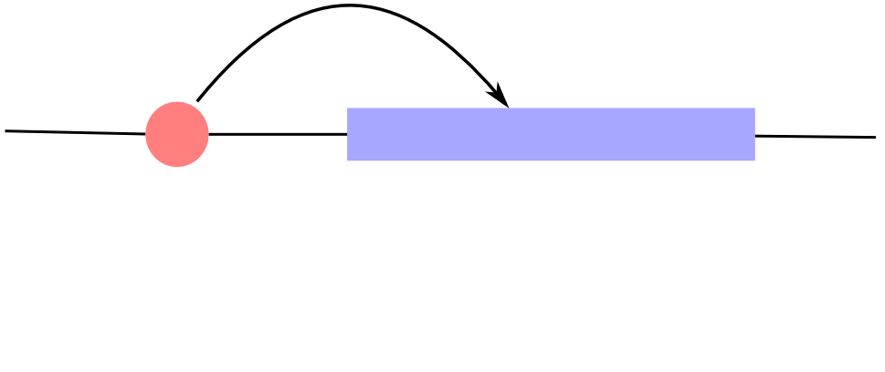
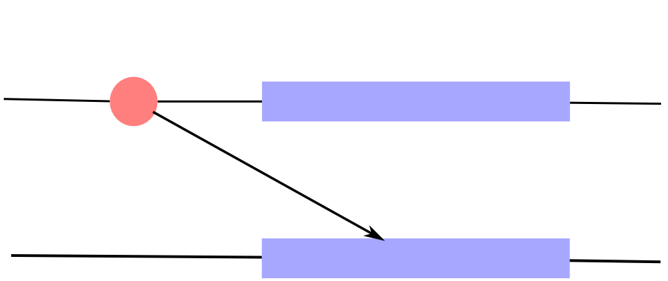
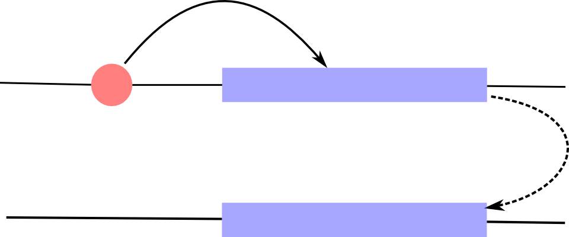
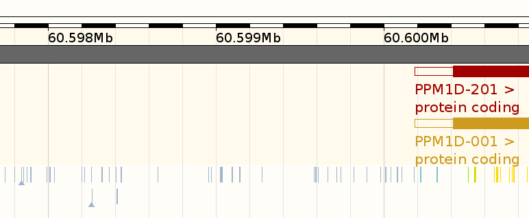
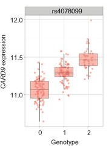
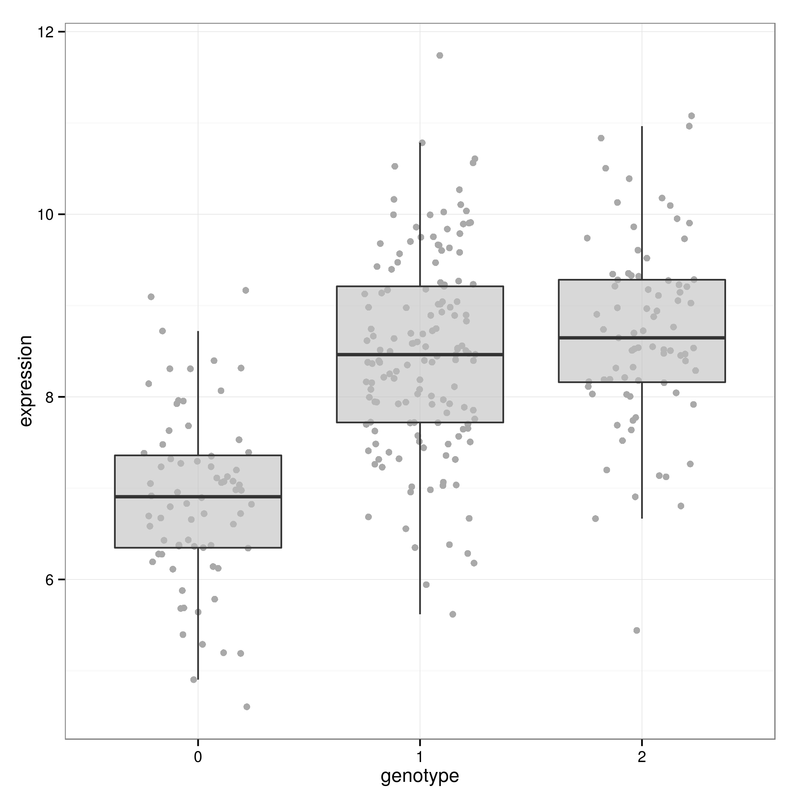
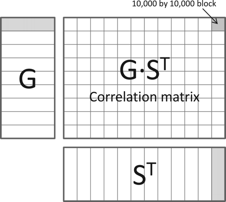

Make sure you have the latest version of the docker image.
eqtl_course)genotypesanalysis/Users/C:\Users\The docker image contains most of the data. Further genotyping data is available from
Username: eqtl_course
Download the data and save it into genotypes
Windows :
docker run -p 8787:8787
-v /c/Users/user/eqtl_course/genotpes:/data/genotypes
humburg/eqtl-introIP address of the server usually is 192.168.59.103.
Use boot2docker ip to check if necessary.
Mac :
docker run -p 8787:8787
-v /Users/user/eqtl_course/genotpes:/data/genotypes
humburg/eqtl-introIP address of the server usually is 192.168.59.103.
Use boot2docker ip to check if necessary.
Linux :
docker run -p 8787:8787
-v /home/user/eqtl_course/genotpes:/data/genotypes
-e USER=$USER -e USERID = $UID
humburg/eqtl-introIP address of the server usually is 127.0.0.1 (or localhost).
Access the RStudio interface at http://yourip:8787.
* Username: rstudio
* Password: rstudioQTL are regions of the genome associated with quantitative traits
If the trait of interest is the expression of a gene, we talk about eQTL.

If the trait of interest is the expression of a gene, we talk about eQTL.

If the trait of interest is the expression of a gene, we talk about eQTL.


| sample | snp_1 | snp_2 | snp_3 | … |
|---|---|---|---|---|
| sample 1 | AA | AA | AB | … |
| sample 2 | AB | AB | AA | … |
| sample 3 | AB | BB | AB | … |
| … | … | … | … | … |
| sample | gene_1 | gene_2 | gene_3 | … |
|---|---|---|---|---|
| sample 1 | 7.3 | 12.8 | 6.5 | … |
| sample 2 | 10.9 | 9.6 | 8.8 | … |
| sample 3 | 9.5 | 10.7 | 15.1 | … |
| … | … | … | … | … |

Different alleles of a SNP may exhibit a dosage effect.
\[Y = \beta_0 + \beta X + \varepsilon\]
\[Y = \beta_0 + \beta X + \varepsilon\]
Residuals are
It is implied that
Lack of independence can produce misleading results.
What could cause this?
Violation of this assumption will lead to incorrect p-values and confidence intervals.
If the true relationship between \(Y\) and \(X\) is non-linear conclusions may be misleading.
When might this occur with eQTL data?
If the true relationship between \(Y\) and \(X\) is non-linear conclusions may be misleading.
When might this occur with eQTL data?

Use multiple regression to obtain better estimates of SNP effects.
\[Y = \beta_0 + \sum_{i=1}^n \beta_i X_i + \varepsilon\]
Create a plot of gene expression by genotype for you SNP/gene pair of choice.
How does this compare to the plot from the previous exercise.
Repeat the simple linear regession analysis with these data.
How does this compare to the result from the previous analysis?
If \(X_i\) and \(X_j\) are correlated the estimates of \(\beta_i\) and \(\beta_j\) will be biased. Several issues may occur:
All the variance in \(Y\) due to \(X_i\) and \(X_j\) is wholly attributed to one of the variables (say, \(X_i\)).
Estimates for both \(\beta_i\) and \(\beta_j\) are too low because all of the variance is explained by the other variable that is held constant.
No sensible interpretation for \(\beta_i\) and \(\beta_j\).
Model fitting may fail.
Only really need to worry about variables of interest for downstream analysis.
How does that help us?
Subset of data published in
Fairfax, Humburg, Makino, et al.
Innate Immune Activity Conditions the Effect of Regulatory
Variants upon Monocyte Gene Expression. Science (2014). doi:10.1126/science.1246949.
This is computationally intensive and may be very time consuming.
Need to be clever about how we do this.

Located in /data/monocytes/annotation/
Use Matrix-eQTL to carry out a cis/trans eQTL analysis.